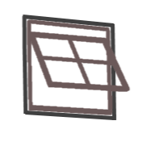
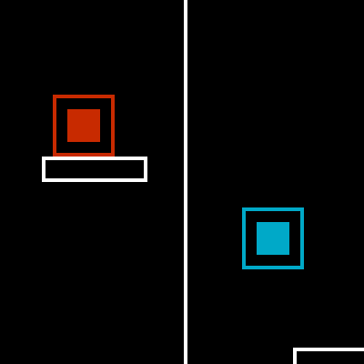

- - - - - - - - - - -
Programming from
NUL to DEL
Skills

Games & Tools
IK extension for Gamemaker
This Gamemaker extension contains 27 adpative functions for easily operating and visualizing Inverse Kinematics

UpDownDuckAround
This brutal game, made for the 4th GMC gamejam, forces you to controll two characters heading in opposite directions

IK Tutorial for gamemaker
This tutorial project, made for and in GameMaker, teaches the user how to use Inverse Kinematics